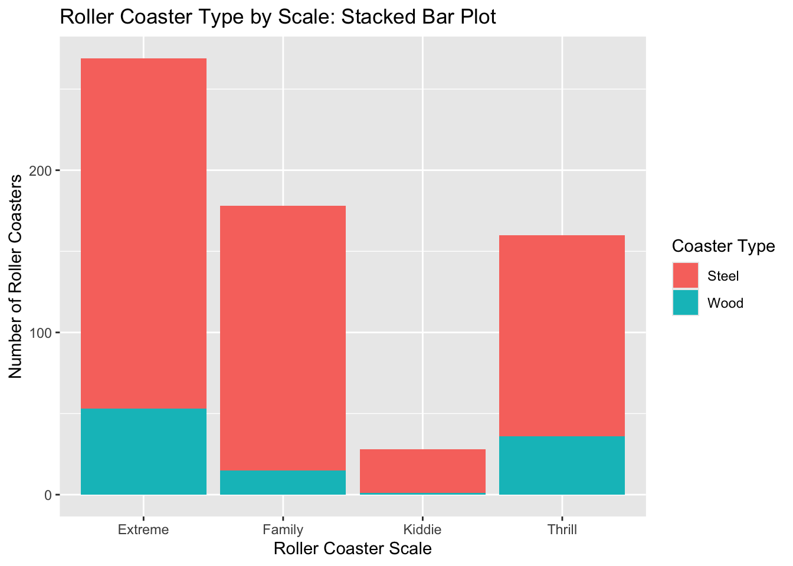

Our individual drafts used several valid approaches to complete the assignment. For the final group submission, we combined those ideas into one consistent workflow. In particular, we used a secure environment variable for the API key, URL encoding so multi-word searches work correctly, explicit parsing of the API response, a compact across() approach for factor conversion, and several complementary approaches to categorical exploratory data analysis. The final document uses one consistent set of object names and explanations so that the work reads as a single group submission.
Task 1: Querying an API and a Tidy-Style Function
1. Connecting to the News API
After obtaining a News API key from newsapi.org, the key is stored in an environment variable named NEWSAPI_KEY rather than written directly in the homework file. This allows the code to be shared through GitHub without exposing the API key. We use GET() from the httr package to request recent English-language news articles related to pharmaceuticals and store the response as an R object.
# Load packages used for the API request and parsinglibrary(httr)library(jsonlite)library(tidyverse)# Retrieve the NewsAPI key from the local environmentnews_api_key <-Sys.getenv("NEWSAPI_KEY")# Query NewsAPI for recent pharmaceutical newsnews_response <-GET(paste0("https://newsapi.org/v2/everything?q=pharmaceuticals","&from=2026-09-01","&language=en","&apiKey=", news_api_key ))# Confirm that the request was successfulstatus_code(news_response)
[1] 200
2. Parsing the News API Response
Next, we parse the API response and locate the article information. We first convert the returned content to text and parse the JSON. We use simplifyVector = FALSE so the nested article information remains in list form. The article records are then combined into a tibble while preserving the nested source information as a list column.
# Convert the response content to text and parse the JSONnews_text <-content(news_response, as ="text", encoding ="UTF-8")news_content <-fromJSON(news_text, simplifyVector =FALSE)# Extract the article informationarticle_list <- news_content$articles# Preserve source as a list column before combining articlesfor (i inseq_along(article_list)) { article_list[[i]]$source <-list(article_list[[i]]$source)}# Combine the article records into a tibblenews_articles <-bind_rows(article_list)# Inspect the resulting article datanews_articles
The resulting object contains the article information returned by the API, and the first column (source) is retained as a list column because it contains nested information about each article’s source.
3. Creating a Function to Query the API
We now create a function that accepts three inputs: a subject to search for, a starting date, and an API key. The search term is URL encoded so that subjects containing spaces can be used. The function sends the API request, parses the returned content, extracts the article information, and returns a tibble.
query_news <-function(subject, from_date, api_key) {# Encode the search term so multi-word subjects can be used subject <-URLencode(as.character(subject))# Build and send the API request response <-GET(paste0("https://newsapi.org/v2/everything?q=", subject,"&from=", from_date,"&language=en","&apiKey=", api_key ) )# Parse the response response_text <-content(response, as ="text", encoding ="UTF-8") response_content <-fromJSON(response_text, simplifyVector =FALSE) article_list <- response_content$articles# Preserve source as a list columnfor (i inseq_along(article_list)) { article_list[[i]]$source <-list(article_list[[i]]$source) }# Return article information as a tibble article_data <-bind_rows(article_list)return(article_data)}# Demonstrate the function with two different searchespharma_articles <-query_news("pharmaceuticals","2026-09-01", news_api_key)biotech_articles <-query_news("biotechnology","2026-09-01", news_api_key)# Display the resultspharma_articles
# A tibble: 100 × 8
source title description url urlToImage publishedAt content author
<list> <chr> <chr> <chr> <chr> <chr> <chr> <chr>
1 <named list> This de… "A deep-se… http… https://w… 2026-09-19… "Micro… <NA>
2 <named list> Why the… "Longevity… http… https://w… 2026-09-18… "Opini… Linds…
3 <named list> Insilic… "Blood sam… http… https://m… 2026-09-07… "Blood… Alina…
4 <named list> A Chine… "A court i… http… https://m… 2026-09-01… "A cou… Alina…
5 <named list> Daily b… "The AI gi… http… https://m… 2026-09-09… "Hello… Flora…
6 <named list> Study S… "A cure fo… http… https://g… 2026-09-07… "An AI… AJ De…
7 <named list> Monsant… "Monsanto … http… https://m… 2026-09-17… "Monsa… Donal…
8 <named list> Someone… "These thr… http… https://s… 2026-09-19… "A que… Alex …
9 <named list> The Dow… "This is t… http… https://w… 2026-09-08… "Every… Thoma…
10 <named list> Scienti… "Scientist… http… https://w… 2026-09-10… "DNA c… <NA>
# ℹ 90 more rows
Task 2: Summarizing Roller Coaster Data
Reading in and Preparing the Data
The roller coaster data are read directly from the URL provided in the assignment. Because latitude, longitude, and boundary information are not needed for the EDA in this assignment, those variables are removed. Character variables that describe categorical characteristics are converted to factors using across(). AgeGroup is converted separately so that its coded values can also be replaced with clearer labels.
# Read in the roller coaster datacoaster_data <-read_csv("https://www4.stat.ncsu.edu/online/datasets/635USrollercoasters.csv")# Prepare variables for categorical EDAcoaster_data <- coaster_data |>select(-Latitude, -Longitude, -Boundary) |>mutate(across(c(Park, City, State, `Census Region`, Scale, Type, Design, `Inversions?`, Make), factor ),AgeGroup =factor( AgeGroup,levels =c("1:Older", "2:Recent", "3:Newest"),labels =c("Older", "Recent", "Newest") ) )
Basic EDA
4. Examining How the Data Are Stored
We use str() to inspect the structure of the prepared data and verify that the variables are stored appropriately.
After conversion, the categorical variables are stored as factors, while quantitative measurements such as top speed, maximum height, drop, length, duration, and number of inversions remain numeric. The coaster name remains character data.
5. Documenting Missing Values
To document missingness, we use a short function that counts NA values within a column and then apply it across all variables. We display only the variables that contain at least one missing value.
# Function to count missing values in a columnsum_na <-function(column) {sum(is.na(column))}# Count missing values for every variablena_counts <- coaster_data |>summarize(across(everything(), sum_na))# Display only variables containing missing valuesna_counts |>select(where(~ .x >0))
# A tibble: 1 × 6
TopSpeed MaxHeight Drop Length Duration Make
<int> <int> <int> <int> <int> <int>
1 74 8 128 33 66 36
The data contain missing values in six variables: TopSpeed, MaxHeight, Drop, Length, Duration, and Make. The counts are 74, 8, 128, 33, 66, and 36, respectively, for a total of 345 missing values.
Categorical Variables
6. Creating and Interpreting Contingency Tables
Because exploratory data analysis can examine the same data from several perspectives, we use different categorical combinations for the one-, two-, and three-way tables.
One-way table
The one-way table summarizes roller coasters by Census Region.
table(coaster_data$`Census Region`)
Midwest Northeast South West
134 156 223 122
For example, the table shows that 134 roller coasters are located in the Midwest region.
Two-way table
The two-way table compares coaster Scale and Type.
For example, 70 roller coasters in the Recent age group are steel coasters that have inversions.
7. Creating a Conditional Two-Way Table
Next, we examine the relationship between coaster Scale and Type specifically for coasters in the Older age group. We create the same conditional table in two different ways.
Both methods produce the same conditional two-way table. Using the factor label "Older" to subset the three-way table makes the selected category explicit.
8. Creating a Two-Way Table with dplyr
We next create a two-way contingency table for Scale and Type using group_by() and summarize(), and then use pivot_wider() so the result resembles the output from table().
Finally, we visualize the relationship between coaster Scale and Type. The first graph stacks coaster types within each Scale category, while the second places the categories side by side for easier comparison.
Stacked bar graph
ggplot(coaster_data, aes(x = Scale, fill = Type)) +geom_bar() +labs(title ="Roller Coaster Type by Scale: Stacked Bar Plot",x ="Roller Coaster Scale",y ="Number of Roller Coasters",fill ="Coaster Type" )

Side-by-side bar graph
ggplot(coaster_data, aes(x = Scale, fill = Type)) +geom_bar(position ="dodge") +labs(title ="Roller Coaster Type by Scale: Side-by-Side Bar Plot",x ="Roller Coaster Scale",y ="Number of Roller Coasters",fill ="Coaster Type" )